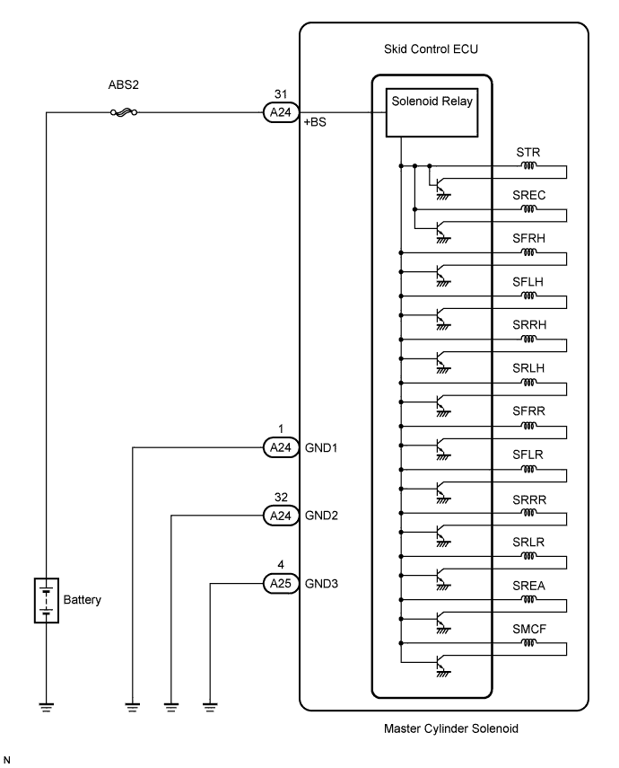
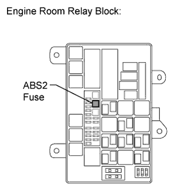
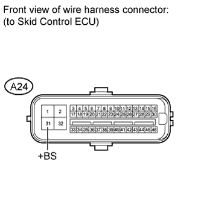

DTC C0278/11 Open or Short Circuit in ABS Solenoid Relay Circuit |
DTC C0279/12 Short to B+ in ABS Solenoid Relay Circuit |
| DTC Code | DTC Detection Condition | Trouble Area |
| C0278/11 | When either of the following conditions is detected:
|
|
| C0279/12 | The following condition continues for at least 0.2 seconds.
|
|

| 1.INSPECT ABS2 FUSE |
 |
Remove the ABS2 fuse from the engine room relay block.
Measure the resistance according to the value(s) in the table below.
| Tester Connection | Condition | Specified Condition |
| ABS2 fuse | Always | Below 1 Ω |
|
| ||||
| OK | |
| 2.INSPECT SKID CONTROL ECU (+BS TERMINAL) |
 |
Install the ABS2 fuse.
Disconnect the A24 skid control ECU connector.
Measure the voltage according to the value(s) in the table below.
| Tester Connection | Condition | Specified Condition |
| A24-31 (+BS) - Body ground | Always | 11 to 14 V |
|
| ||||
| OK | |
| 3.INSPECT SKID CONTROL ECU (GND TERMINAL) |
 |
Disconnect the A24 and A25 skid control ECU connectors.
Measure the resistance according to the value(s) in the table below.
| Tester Connection | Condition | Specified Condition |
| A24-1 (GND1) - Body ground | Always | Below 1 Ω |
| A24-32 (GND2) - Body ground | Always | Below 1 Ω |
| A25-4 (GND3) - Body ground | Always | Below 1 Ω |
|
| ||||
| OK | |
| 4.RECONFIRM DTC |
Clear the DTCs (Click here).
Drive the vehicle at a speed of approximately 32 km/h (20 mph) or more for 60 seconds or more.
Check if the same DTCs are output (Click here).
| Result | Proceed to | |
| DTC is not output | A | |
| DTC is output | LHD | B |
| RHD | C | |
|
| ||||
|
| ||||
| A | ||
| ||